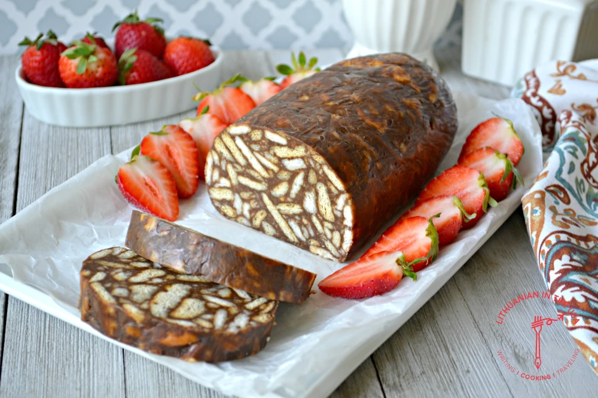

Lazy Cake - Tinginys

Description
Tinginys, or Lithuanian lazy cake cookies, are one of Lithuania’s simplest and most beloved desserts.With no baking required, it’s easy to see where delicious tinginys got its nickname of ‘lazy cake’ from. Lithuanian lazy cake is super easy to make. It takes less than 20 minutes of prep time.
Ingredients
- 00 g (14 oz) “Maria“ cookies or “Petit beurre“ cookies
- 150 g (1 stick and 3 tbsp.) unsalted butter
- 180 ml (3/4 cup) milk
- 70 g (1/4 cup) granulated sugar
- 4 tbsp. unsweetened cocoa powder
- 1 tsp. vanilla sugar or vanilla extract;
- 1 pinch salt
Steps
- Break cookies into a large bowl;
- n a small saucepan, melt butter over medium heat. Pour in milk, add sugar, cocoa, vanilla sugar and salt. Stir until the syrup begins to boil. Boil for about 3-4 minutes over low heat, stirring constantly. Syrup will thicken slightly. Then immediately pour it over the cookies and mix well. Leave cookie mass to cool slightly;
- Lay down a sheet of plastic wrap on the counter. When the cookie mass has cooled down a bit, place it on a plastic wrap and form into a roll. Then wrap it, seal well to avoid air gaps, tighten the ends of the roll and put it in a refrigerator for at least a couple of hours or overnight. When the lazy cake hardens, slice it and enjoy!